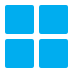

- Principes fondamentaux
- Architecture de l'environnement
- Les deux remotes Git — rôles et étanchéité
- Perméabilité maîtrisée — formation et connaissances
- Stratégie de stockage et synchronisation
- Base de connaissances centralisée — Obsidian
- Portfolio public — déploiement multi-postes
- Sécurité et conformité ISO 27001
- Référence .gitignore Python
Principes fondamentaux
Outils de cet environnement



Architecture de l'environnement
Vue d'ensemble des machines, dépôts et drives impliqués, et de leurs relations.
┌──────────────────────────────────────────────────────────────────────┐ │ POSTES DE TRAVAIL │ ├──────────────────────────────┬───────────────────────────────────────┤ │ 💼 Portable PRO │ 🏠 Portable PERSO │ │ Dev\ Knowledge\ Ptools\ │ GitHub + Drive perso (always on) │ │ ⚠ VPN requis → GitLab │ Formation · portfolio · knowledge │ │ Drive pro : always on │ Pas d'accès au GitLab entreprise │ ├──────────────────────────────┴───────────────────────────────────────┤ │ VMs Proxmox + Serveur IA │ │ 🖥 VM Dev / Test git clone depuis GitHub (ou GitLab + VPN) │ │ 🖥 VM IA Obsidian Git · lecture du vault knowledge │ │ ⚡ Serveur IA scripts Python · accès GitHub │ ├──────────────────────────────────────────────────────────────────────┤ │ REMOTES GIT │ │ ☁ GitHub (public / privé) portfolio · formation · knowledge │ │ 🔒 GitLab entreprise projets pro uniquement · VPN requis │ ├──────────────────────────────────────────────────────────────────────┤ │ STOCKAGE / SYNC │ │ ☁ Drive perso FreeFileSync / Robocopy → sources sans .git │ │ ☁ Drive pro documents entreprise · poste pro uniquement │ └──────────────────────────────────────────────────────────────────────┘
Les deux remotes Git — rôles et étanchéité
GitHub — dépôt public / perso
- Portfolio public (site web personnel)
- Projets Python de formation et d'apprentissage
- Vault Obsidian (repo privé)
- Accessible depuis tous les postes sans VPN
- Déploiement automatique via GitHub Pages
GitLab CE — dépôt interne entreprise
- Projets professionnels uniquement
- Accessible uniquement via VPN entreprise
- Depuis le poste professionnel exclusivement
- Instance auto-hébergée — données internes
- GitLab Community Edition est open source
Matrice d'accès aux remotes
| Poste / machine | GitHub |
GitLab entreprise |
|---|---|---|
| 💼 Portable PRO | ✓ | ✓ (VPN) |
| 🏠 Portable PERSO | ✓ | ✗ |
| 🖥 VMs Proxmox | ✓ | ✗ |
| ⚡ Serveur IA | ✓ | ✗ |
Perméabilité maîtrisée — formation et connaissances
Certains contenus restent strictement cloisonnés (code pro). D'autres gagnent à être accessibles partout — c'est leur valeur. La distinction est technique, pas seulement organisationnelle.
| Ressource | 💼 PRO | 🏠 PERSO | 🖥 VMs | ⚡ Serveur IA | Canal d'accès |
|---|---|---|---|---|---|
| Code professionnel | ✓ | ✗ | ⚡ | ✗ | GitLab + VPN |
| Projets Python — formation | ✓ | ✓ | ✓ | ✓ | GitHub → git clone |
| Base de connaissances | ✓ | ✓ | ✓ | ✓ | GitHub privé + Obsidian Git |
| Portfolio (site web) | ✓ | ✓ | ✓ | ✓ | GitHub → déploiement web |
| Outils portables (Ptools) | ✓ | ✓ | ⚡ | ⚡ | Drive perso (FreeFileSync) |
| Documents entreprise | ✓ | ✗ | ✗ | ✗ | Drive entreprise (pro only) |
Stratégie de stockage et synchronisation
- Sauvegarde des sources sans
.git - Vault Obsidian complet (Knowledge\)
- Outils portables (Ptools\)
- Mode PRO : free up space
- Mode PERSO : always on device
- Documents professionnels uniquement
- Always on device sur le poste pro
- Inaccessible depuis le poste perso
- Ne contient pas de code source
FreeFileSync — synchronisation planifiée (GUI)
Dev\, Knowledge\, Ptools\ vers le Drive perso. Exclure les dossiers .git via la règle *\.*\ pour ne pas copier l'historique Git. Interface visuelle, profils sauvegardables, mode miroir ou bidirectionnel. Idéal pour une utilisation sans ligne de commande.Robocopy — synchronisation scriptable (CLI)
robocopy C:\Dev D:\Backup\Dev /MIR /XD .git .venv __pycache__ dist robocopy C:\Knowledge D:\Backup\Knowledge /MIR robocopy C:\Ptools D:\Backup\Ptools /MIR /XD .git
index.lock par le client de sync peut corrompre les dépôts. Toujours préférer FreeFileSync ou Robocopy en mode planifié..git et n'historise pas les commits.
Base de connaissances centralisée — Obsidian
Obsidian stocke les notes en Markdown local — des fichiers texte versionnables avec Git. C'est le seul outil PKM à la fois open source, souverain sur les données et nativement compatible Git.
Architecture du vault multi-postes
Repo GitHub privé knowledge-vault
Créer un repo GitHub privé dédié. Initialiser git dans le dossier Knowledge local, commiter et pousser. Ce repo est la source de vérité unique du vault.
Plugin Obsidian Git — configuration
Pull automatique au démarrage · Push automatique toutes les 10 min · Message : vault: auto-sync {{date}}. Le plugin gère les conflits Git standard.
PRO : vault dans Knowledge\, sync Git + backup FreeFileSync. PERSO, VMs, Serveur IA : git clone du repo privé, plugin Obsidian Git actif. Le vault est disponible et synchronisé partout en quelques minutes.
Toujours faire un pull avant d'écrire si plusieurs postes ont été utilisés en parallèle. Les conflits sur des notes Markdown sont rares et simples à résoudre dans n'importe quel éditeur texte.
Portfolio public — déploiement multi-postes
Le portfolio est modifiable depuis les deux portables. Sa chaîne de déploiement doit être robuste et sans ambiguïté sur la source de vérité.
git pull. Après chaque session : git push.
Chaîne de déploiement avec nginx
Édition dans le répertoire de travail (clone local sur le poste actif). Même workflow sur le portable PRO et le portable PERSO.
Prévisualisation locale — nginx (open source)
Serveur nginx portable synchronisé via le Drive perso → http://localhost:8080. Sur le portable PERSO sans nginx : ouvrir index.html dans le navigateur suffit pour du HTML/CSS statique.
Message de commit descriptif. Le push déclenche automatiquement le déploiement via GitHub Pages.
Mise en production automatique
GitHub publie le site sans intervention manuelle. Infrastructure de déploiement 100 % open source et gratuite.
Sécurité et conformité ISO 27001
La norme ISO 27001 organise la sécurité autour de trois critères : Confidentialité (C), Intégrité (I), Disponibilité (D).
git config --global credential.helper manager. Les tokens ne doivent jamais apparaître dans les URLs, l'historique PowerShell ou les fichiers de config. ISO 27001 A.8.13..env, mots de passe, clés API ne doivent jamais être commités. En cas d'exposition : révoquer le token immédiatement, purger l'historique avec BFG Repo Cleaner (open source). ISO 27001 A.8.24..git. Publier tout projet sur GitHub ou GitLab selon sa nature. ISO 27001 A.8.13.
Référence .gitignore Python
À créer à la racine de tout nouveau projet Python avant le premier git add ..
# ── Environnement Python ───────────────────────────── .venv/ venv/ env/ __pycache__/ *.pyc *.pyo # ── IDE ────────────────────────────────────────────── .idea/ .vscode/ # ── Build PyInstaller ──────────────────────────────── dist/ build/ *.spec file_version_info.txt # ── Secrets ────────────────────────────────────────── .env *.env secrets.py # ── Windows ────────────────────────────────────────── *.lnk *.old *.tmp Thumbs.db desktop.ini # ── Logs ───────────────────────────────────────────── *.log logs/